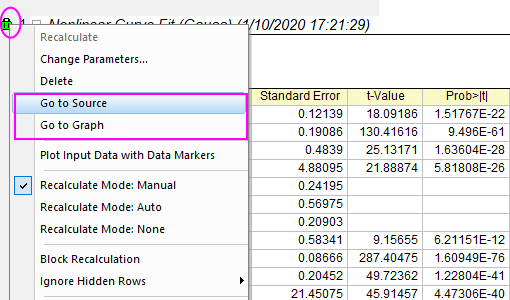

FAQ-1036 Wie kehre ich zum Quellblatt bzw. Quelldiagramm zurück?
Go-to-source
Letztes Update: 09.01.2020
Es kann vorkommen, dass Sie die Ergebnisse in den Ergebnisblättern bereits erhalten haben und die Quelldaten des aktuellen Ergebnisses überprüfen möchten. Folgenden Optionen stehen Ihnen offen:
- Falls die Operation von einem Blatt ausgeht, klicken Sie auf das grüne Schloss, um Zur Quelle gehen zu wählen und zum Quellarbeitsblatt zurückzukehren.
- Falls die Operation von einem Diagramm ausgeht, klicken Sie auf das grüne Schloss, um Zum Diagramm gehen zu wählen und zum Quelldiagrammfenster zurückzukehren.

Schlüsselwörter:zur Quelle gehen, Quellarbeitsblatt, Quelldaten, Ergebnisblatt